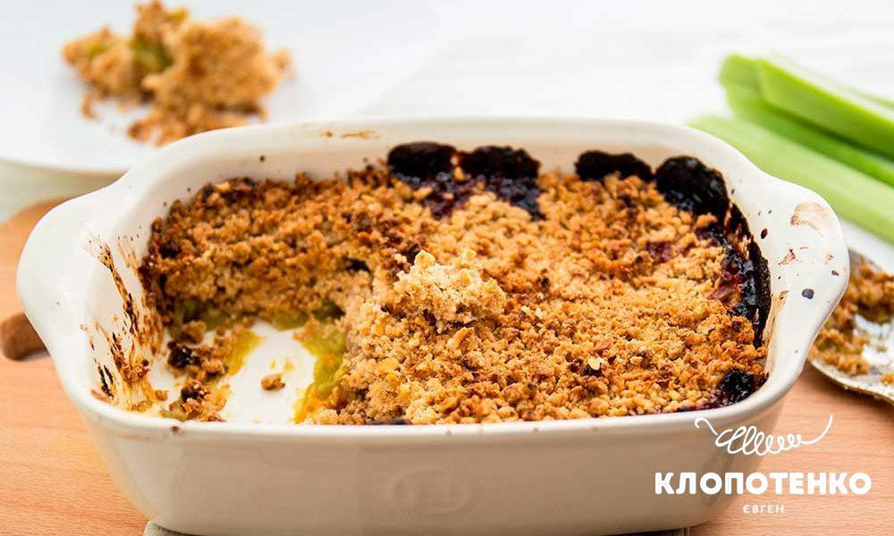

Рецепти
Тут будуть рецепти. Зробити класифікацию, пошук по продуктах
Ревневий пиріг
Cкладові:
- 400 г стебел ревеню
- 250 г пшеничного борошна
- 150 г вівсяних пластівців
- 1 ч. л. меленої кориці
- 200 г вершкового масла
- 2 апельсини (сік та цедра)
- 150 г цукру
Приготуйте всі інгредієнти для крамбла з ревеню. Розігрійте духовку до 180 градусів. Візьміть 400 г стебел ревеню, помийте їх, очистьте і поріжте на шматочки завширшки 2-3 см.
Вершкове масло (200 г) поріжте невеликими кубиками. Змішайте в мисці кубики масла, 250 г борошна, 150 г вівсяних пластівців, 1 ч. л. меленої кориці та цедру з двох апельсинів. Суміш ретельно перемішайте руками, доки вона не стане схожа на хлібну крихту.
Помийте два апельсини, зріжте за допомогою терки цедру та вичавить сік з апельсинів за допомогою соковитискача в окремий посуд
У форму для запікання викладіть порізаний ревінь, 100 г цукру, залийте апельсиновим соком та трохи перемішайте. Зверху викладіть вівсяну крихту, посипте її залишками цукру. Відправте в духовку на 40-50 хвилин. Дістаньте пиріг з духовки та дайте трохи охолонути. Ідеальним доповненням до крамбла стане кулька ванільного пломбіру або вершкового морозива.
А щоб освіжитися у спекотний день, приготуйте лимонад з ревеню із лимоном . Його кислуватий смак чудово вгамує спрагу.

Cкладові:
- 500 г стебел ревеню
- 500 г цукру
- 1 л води
- 4 зернятка кардамону
- сік двох середніх лимонів
- 1 лимон
Очищений ревінь наріжте брусочками по 2 см і покладіть в каструльку з цукром і водою, додайте 4 зернятка кардамону. Після закипання зменшіть вогонь і проваріть 20 хвилин. Потім остудіть та видаліть кардомон із сиропу.
У готовий сироп додайте ще 500 мл води і сік 2 лимонів. Можна використовувати як столову слабогазовану воду, так і воду без газу. За бажанням додайте в лимонад ще трохи цукру. Прикрасьте лимонад нарізаними кружечками лимона.
Консервація
Зробити класифікацію-солоне/солодке
Заморозка, дегідратор
Також окремо роздилілити ідеї для заморозки (фркути, овочі, готові продукти). Окремо дегр-я
Список покупок
Зробити окрему аплікацію-використовувати при поході в магазин